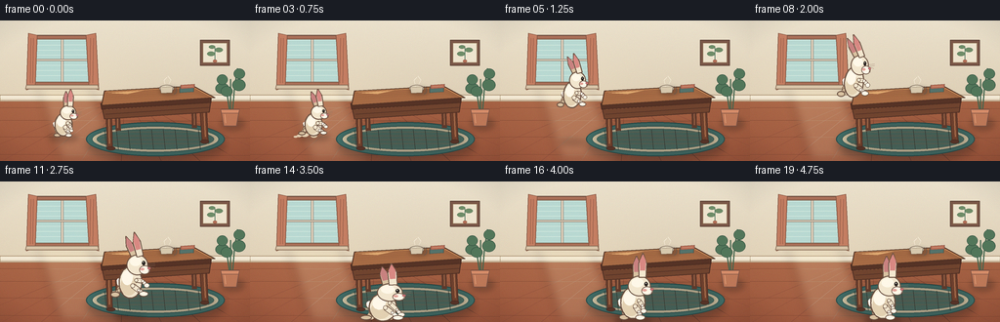
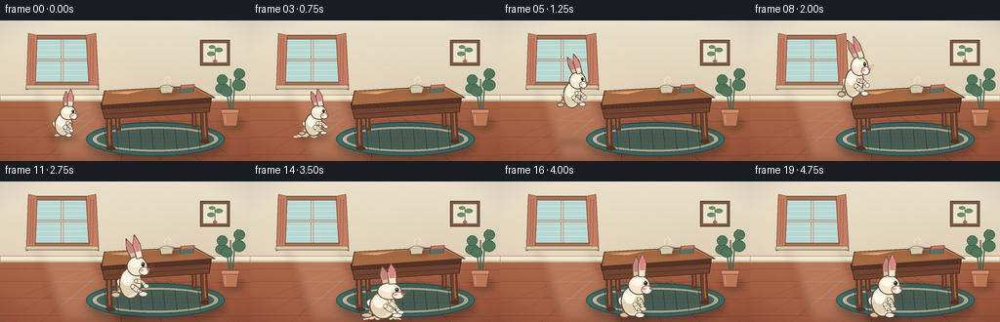
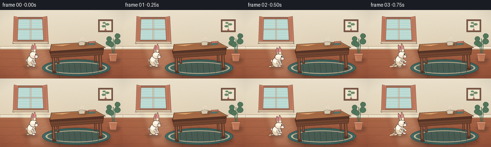

CODING AGENTS AS PIXEL WORLD MODELS
traex/DeepSeek-V4.1-Flash · dynamic_spatial_relationship_0020
点击播放 · 原生 RGB 像素
逐轮保存的候选
回放视频、检查图与代码变化。
每份候选均可单独播放。实际图片检查记录在下方工具轨迹中。
候选 01播放与检查图
点击播放 · 原生 RGB 像素

展开代码变化
--- 上一保存版本
+++ 本次保存版本
@@ -0,0 +1,537 @@
+from __future__ import annotations
+
+import math
+from pathlib import Path
+
+import numpy as np
+from PIL import Image, ImageDraw, ImageFilter
+
+import artifact_io
+
+
+W, H = 256, 144
+FPS = 4
+FRAMES = 20
+SS = 4
+HW, HH = W * SS, H * SS
+CASE_DIR = Path(__file__).resolve().parent
+
+
+def col(value: str, alpha: int = 255) -> tuple[int, int, int, int]:
+ value = value.lstrip("#")
+ return tuple(int(value[i : i + 2], 16) for i in (0, 2, 4)) + (alpha,)
+
+
+def mix(a: tuple[int, int, int], b: tuple[int, int, int], t: float) -> tuple[int, int, int]:
+ return tuple(round(a[i] * (1.0 - t) + b[i] * t) for i in range(3))
+
+
+def p(point: tuple[float, float]) -> tuple[int, int]:
+ return round(point[0] * SS), round(point[1] * SS)
+
+
+def pts(points):
+ return [p(point) for point in points]
+
+
+def smoothstep(t: float) -> float:
+ t = max(0.0, min(1.0, t))
+ return t * t * (3.0 - 2.0 * t)
+
+
+def ease_out(t: float) -> float:
+ return 1.0 - (1.0 - t) ** 3
+
+
+def line(draw: ImageDraw.ImageDraw, points, fill, width: float):
+ draw.line(pts(points), fill=fill, width=max(1, round(width * SS)), joint="curve")
+
+
+def polygon(draw: ImageDraw.ImageDraw, points, fill, outline=None, width: float = 1.0):
+ draw.polygon(pts(points), fill=fill)
+ if outline is not None:
+ draw.line(pts(points + [points[0]]), fill=outline, width=max(1, round(width * SS)), joint="curve")
+
+
+def ellipse(draw: ImageDraw.ImageDraw, box, fill, outline=None, width: float = 1.0):
+ draw.ellipse(tuple(round(v * SS) for v in box), fill=fill, outline=outline, width=max(1, round(width * SS)))
+
+
+def rotated_ellipse(
+ draw: ImageDraw.ImageDraw,
+ center: tuple[float, float],
+ radii: tuple[float, float],
+ angle: float,
+ fill,
+ outline=None,
+ width: float = 1.0,
+):
+ cx, cy = center
+ rx, ry = radii
+ ca, sa = math.cos(angle), math.sin(angle)
+ points = []
+ for i in range(64):
+ theta = math.tau * i / 64
+ x, y = rx * math.cos(theta), ry * math.sin(theta)
+ points.append((cx + ca * x - sa * y, cy + sa * x + ca * y))
+ polygon(draw, points, fill, outline, width)
+
+
+def soft_shadow(layer: Image.Image, box, color=(62, 44, 35, 90), blur: float = 5.0):
+ shadow = Image.new("RGBA", layer.size, (0, 0, 0, 0))
+ d = ImageDraw.Draw(shadow)
+ d.ellipse(tuple(round(v * SS) for v in box), fill=color)
+ shadow = shadow.filter(ImageFilter.GaussianBlur(blur * SS))
+ layer.alpha_composite(shadow)
+
+
+def clipped_texture(layer: Image.Image, polygon_points, lines):
+ mask = Image.new("L", layer.size, 0)
+ ImageDraw.Draw(mask).polygon(pts(polygon_points), fill=255)
+ texture = Image.new("RGBA", layer.size, (0, 0, 0, 0))
+ d = ImageDraw.Draw(texture)
+ for points, fill, width in lines:
+ line(d, points, fill, width)
+ texture.putalpha(Image.composite(texture.getchannel("A"), Image.new("L", layer.size, 0), mask))
+ layer.alpha_composite(texture)
+
+
+def background() -> Image.Image:
+ rng = np.random.default_rng(23)
+ yy = np.linspace(0.0, 1.0, HH)[:, None]
+ xx = np.linspace(0.0, 1.0, HW)[None, :]
+
+ wall_top = np.array([235, 225, 204], dtype=float)
+ wall_bottom = np.array([211, 193, 164], dtype=float)
+ floor_top = np.array([185, 119, 82], dtype=float)
+ floor_bottom = np.array([151, 83, 58], dtype=float)
+
+ wall = wall_top[None, None, :] * (1.0 - yy[:, :, None]) + wall_bottom[None, None, :] * yy[:, :, None]
+ wall = np.repeat(wall, HW, axis=1)
+ floor = floor_top[None, None, :] * (1.0 - yy[:, :, None]) + floor_bottom[None, None, :] * yy[:, :, None]
+ floor = np.repeat(floor, HW, axis=1)
+
+ horizon = 0.555
+ mask = np.clip((yy[:, :, None] - horizon) / 0.012, 0.0, 1.0)
+ arr = wall * (1.0 - mask) + floor * mask
+
+ # Broad window light and a little paper-like color variation.
+ light = 8.0 * np.exp(-((xx - 0.24) / 0.25) ** 2) * np.clip((yy - 0.08) / 0.5, 0.0, 1.0)
+ arr += light[:, :, None] * np.array([1.0, 0.92, 0.72])[None, None, :]
+ grain = rng.normal(0.0, 1.1, (HH, HW, 1))
+ arr += grain
+ arr = np.clip(arr, 0, 255).astype(np.uint8)
+ return Image.fromarray(arr, "RGB").convert("RGBA")
+
+
+def draw_room(layer: Image.Image):
+ d = ImageDraw.Draw(layer, "RGBA")
+
+ # Floor boards and their perspective seams.
+ vanish = (128.0, 79.0)
+ for bottom_x in (-42, 2, 42, 83, 124, 165, 205, 246, 292):
+ top_x = vanish[0] + (bottom_x - vanish[0]) * 0.10
+ line(d, [(top_x, 81), (bottom_x, 144)], col("#8f503c", 74), 0.55)
+ for y, alpha in ((89, 48), (102, 50), (119, 55), (137, 62)):
+ line(d, [(0, y), (256, y + 1.2)], col("#784331", alpha), 0.6)
+
+ # Baseboard.
+ polygon(d, [(0, 76.2), (256, 76.2), (256, 82.5), (0, 82.5)], col("#efe4ce"), col("#ad9476"), 0.65)
+ line(d, [(0, 78.1), (256, 78.1)], col("#fff8e8", 130), 0.45)
+ line(d, [(0, 81.2), (256, 81.2)], col("#a98667", 100), 0.5)
+
+ # Warm diagonal sunlight across the left floor.
+ beam = Image.new("RGBA", layer.size, (0, 0, 0, 0))
+ bd = ImageDraw.Draw(beam)
+ bd.polygon(pts([(37, 64), (90, 64), (124, 143), (62, 143)]), fill=col("#fff0c6", 38))
+ beam = beam.filter(ImageFilter.GaussianBlur(5 * SS))
+ layer.alpha_composite(beam)
+
+ # Window with deep teal frame and muted linen curtains.
+ polygon(d, [(31, 15), (96, 15), (96, 67), (31, 67)], col("#a86e57"), col("#6d4e40"), 1.1)
+ polygon(d, [(35, 19), (92, 19), (92, 63), (35, 63)], col("#b9d9d2"), col("#775b48"), 0.8)
+ for i in range(8):
+ yy = 20 + i * 5.2
+ line(d, [(36, yy), (91, yy - 0.5)], col("#d8ebe0", 54), 0.7)
+ polygon(d, [(62.7, 19), (64.5, 19), (64.5, 63), (62.7, 63)], col("#f2e7d1"), col("#795d4c"), 0.45)
+ polygon(d, [(35, 39.4), (92, 39.4), (92, 41.2), (35, 41.2)], col("#f2e7d1"), col("#795d4c"), 0.45)
+ polygon(d, [(29, 13), (38, 15), (36, 68), (27, 71)], col("#c47e62"), col("#855643"), 0.8)
+ polygon(d, [(88, 15), (98, 13), (101, 71), (91, 68)], col("#c47e62"), col("#855643"), 0.8)
+ for x in (31.5, 34.0, 92.5, 95.5):
+ line(d, [(x, 18), (x - 0.8, 64)], col("#8f5a48", 90), 0.55)
+ polygon(d, [(27, 66), (100, 66), (101, 70), (26, 70)], col("#d8c4a8"), col("#856953"), 0.65)
+
+ # Small framed botanical print on the right wall.
+ polygon(d, [(205, 20), (235, 20), (235, 46), (205, 46)], col("#7a5647"), col("#5e453a"), 0.8)
+ polygon(d, [(208, 23), (232, 23), (232, 43), (208, 43)], col("#eee4ce"), col("#b29a78"), 0.45)
+ line(d, [(220, 41), (220, 28)], col("#507761", 230), 0.8)
+ for bx, by, rx, ry in ((216, 34, 4, 2.3), (224, 30, 4, 2.2), (217, 27, 3.2, 1.8)):
+ ellipse(d, (bx - rx, by - ry, bx + rx, by + ry), col("#6f8d68"), col("#4f6a54"), 0.35)
+ ellipse(d, (218, 40, 222, 43), col("#b46d55"), col("#795142"), 0.35)
+
+
+def draw_rug(layer: Image.Image):
+ d = ImageDraw.Draw(layer, "RGBA")
+ soft_shadow(layer, (89, 111, 230, 145), (59, 47, 42, 90), 4.0)
+ d = ImageDraw.Draw(layer, "RGBA")
+ ellipse(d, (88, 104, 230, 139), col("#426f69"), col("#294d4b"), 0.9)
+ ellipse(d, (94, 108, 224, 135), col("#d8cba9"), col("#345b58"), 0.65)
+ ellipse(d, (99, 111, 219, 132), col("#4f7d72"), col("#345b58"), 0.45)
+ for y in (114, 118, 122, 126):
+ line(d, [(104, y), (214, y)], col("#a9b18f", 90), 0.55)
+ for x in range(107, 215, 12):
+ line(d, [(x, 112), (x + 2, 132)], col("#2f5a57", 44), 0.5)
+
+
+def draw_table(layer: Image.Image):
+ d = ImageDraw.Draw(layer, "RGBA")
+ soft_shadow(layer, (97, 108, 224, 135), (55, 39, 33, 100), 5.0)
+ d = ImageDraw.Draw(layer, "RGBA")
+
+ # Back legs.
+ line(d, [(119, 82), (121, 113)], col("#5e392b"), 5.5)
+ line(d, [(198, 78), (199, 110)], col("#5e392b"), 5.2)
+ line(d, [(120, 84), (120.2, 110)], col("#956044", 120), 1.4)
+ line(d, [(198.5, 80), (199, 107)], col("#956044", 100), 1.2)
+
+ # Front legs, slightly tapered by layering.
+ polygon(d, [(108, 87), (114, 88), (115, 130), (110, 132)], col("#6d402d"), col("#4b2e25"), 0.8)
+ polygon(d, [(204, 83), (211, 82), (213, 123), (207, 125)], col("#6d402d"), col("#4b2e25"), 0.8)
+ line(d, [(111.2, 91), (112.0, 126)], col("#a56b4a", 130), 1.2)
+ line(d, [(208.5, 87), (210.2, 119)], col("#a56b4a", 120), 1.2)
+ ellipse(d, (109, 129, 118, 133), col("#563327"), col("#412920"), 0.5)
+ ellipse(d, (205, 122, 214, 126), col("#563327"), col("#412920"), 0.5)
+
+ # Apron.
+ polygon(d, [(104, 87), (216, 80), (214, 94), (107, 101)], col("#70442f"), col("#4f3025"), 0.9)
+ line(d, [(107, 91), (214, 84)], col("#b5774e", 105), 0.8)
+ line(d, [(108, 96), (214, 89)], col("#4b2d24", 130), 0.65)
+
+ # Tabletop side and top surface.
+ polygon(d, [(103, 85), (216, 78), (216, 84), (104, 91)], col("#563326"), col("#43271f"), 0.75)
+ top = [(107, 72), (198, 67), (220, 79), (104, 87)]
+ polygon(d, top, col("#a66b45"), col("#4d3024"), 1.0)
+ grain = []
+ for offset, alpha in ((-5, 95), (2, 78), (9, 90), (16, 60)):
+ grain.append(([(109, 76 + offset * 0.28), (151, 73 + offset * 0.25), (201, 72 + offset * 0.2), (216, 79 + offset * 0.12)], col("#5c3828", alpha), 0.42))
+ clipped_texture(layer, top, grain)
+ d = ImageDraw.Draw(layer, "RGBA")
+ line(d, [(109, 72.5), (198, 68.3), (217, 78.5)], col("#d19660", 150), 0.7)
+ polygon(d, [(111, 74), (129, 72.7), (147, 71.6), (130, 75.2)], col("#e0aa71", 32))
+
+ # A ceramic cup and a small stack of books give scale to the table.
+ soft_shadow(layer, (163, 68, 183, 76), (46, 35, 30, 75), 2.0)
+ d = ImageDraw.Draw(layer, "RGBA")
+ ellipse(d, (163, 66, 178, 73), col("#eee2c8"), col("#69594c"), 0.55)
+ polygon(d, [(164, 68), (177, 67.5), (176, 74), (165, 74.5)], col("#d7c8ad"), col("#69594c"), 0.55)
+ d.arc(tuple(round(v * SS) for v in (175, 67.5, 181, 75.5)), 270, 90, fill=col("#69594c"), width=round(0.65 * SS))
+ line(d, [(169, 65), (168, 61), (171, 58)], col("#f9f0dc", 120), 0.55)
+ line(d, [(173, 65), (175, 61), (172, 57)], col("#f9f0dc", 95), 0.45)
+
+ polygon(d, [(184, 69), (198, 68), (198, 73), (184, 74)], col("#55736b"), col("#354c48"), 0.5)
+ polygon(d, [(185, 66), (199, 65), (199, 69), (185, 70)], col("#b86f57"), col("#71483d"), 0.5)
+ line(d, [(187, 67.5), (197, 67)], col("#e6b090", 90), 0.45)
+
+
+def draw_plant(layer: Image.Image):
+ d = ImageDraw.Draw(layer, "RGBA")
+ soft_shadow(layer, (226, 100, 250, 112), (51, 40, 35, 80), 3.0)
+ d = ImageDraw.Draw(layer, "RGBA")
+ for stem, leaves in (
+ ([(235, 93), (232, 72), (229, 57)], [((231, 73), (224, 66), 3.4, 2.0), ((230, 64), (225, 57), 3.0, 1.8)]),
+ ([(238, 93), (240, 69), (243, 49)], [((241, 70), (248, 62), 3.2, 1.9), ((242, 58), (248, 51), 2.8, 1.7)]),
+ ([(236, 91), (236, 74), (236, 60)], [((235, 76), (229, 69), 3.0, 1.7)]),
+ ):
+ line(d, stem, col("#41654e"), 1.25)
+ for (cx, cy), (ex, ey), rx, ry in leaves:
+ ellipse(d, (min(cx, ex) - rx, min(cy, ey) - ry, max(cx, ex) + rx, max(cy, ey) + ry), col("#52765a"), col("#355343"), 0.45)
+ polygon(d, [(226, 91), (245, 91), (242, 108), (229, 108)], col("#bd7858"), col("#765044"), 0.8)
+ polygon(d, [(226, 91), (245, 91), (244, 95), (227, 95)], col("#d58c69"), col("#765044"), 0.55)
+ line(d, [(230, 96), (231, 105)], col("#e4a27b", 100), 0.65)
+
+
+def limb(draw: ImageDraw.ImageDraw, start, end, width: float, fill, outline):
+ line(draw, [start, end], outline, width + 1.15)
+ line(draw, [start, end], fill, width)
+ ellipse(draw, (start[0] - width / 2, start[1] - width / 2, start[0] + width / 2, start[1] + width / 2), fill, outline, 0.55)
+
+
+def rabbit_ear(draw: ImageDraw.ImageDraw, base, length, width, angle, fill, outline, inner):
+ direction = (math.sin(angle), -math.cos(angle))
+ perpendicular = (math.cos(angle), math.sin(angle))
+ tip = (base[0] + direction[0] * length, base[1] + direction[1] * length)
+ waist = (base[0] + direction[0] * length * 0.58, base[1] + direction[1] * length * 0.58)
+ left = (waist[0] - perpendicular[0] * width * 0.55, waist[1] - perpendicular[1] * width * 0.55)
+ right = (waist[0] + perpendicular[0] * width * 0.55, waist[1] + perpendicular[1] * width * 0.55)
+ base_l = (base[0] - perpendicular[0] * width * 0.48, base[1] - perpendicular[1] * width * 0.48)
+ base_r = (base[0] + perpendicular[0] * width * 0.48, base[1] + perpendicular[1] * width * 0.48)
+ shape = [base_l, left, tip, right, base_r]
+ polygon(draw, shape, fill, outline, 1.0)
+ inner_shape = [
+ (base_l[0] * 0.72 + tip[0] * 0.28, base_l[1] * 0.72 + tip[1] * 0.28),
+ (left[0] * 0.78 + tip[0] * 0.22, left[1] * 0.78 + tip[1] * 0.22),
+ (tip[0] * 0.89 + waist[0] * 0.11, tip[1] * 0.89 + waist[1] * 0.11),
+ (right[0] * 0.78 + tip[0] * 0.22, right[1] * 0.78 + tip[1] * 0.22),
+ (base_r[0] * 0.72 + tip[0] * 0.28, base_r[1] * 0.72 + tip[1] * 0.28),
+ ]
+ polygon(draw, inner_shape, inner)
+
+
+def draw_rabbit(
+ layer: Image.Image,
+ x: float,
+ ground_y: float,
+ scale: float,
+ squash_x: float,
+ squash_y: float,
+ pose: str,
+ phase: float,
+ blink: float = 0.0,
+):
+ sx = scale * squash_x
+ sy = scale * squash_y
+ fur = col("#f3e7cf")
+ light_fur = col("#fff8e8")
+ shade = col("#d9c2a1")
+ deep_shade = col("#c3a685")
+ outline = col("#6b5142")
+ inner = col("#d98983")
+ pink = col("#c97073")
+ eye = col("#29231f")
+
+ def q(lx: float, ly: float) -> tuple[float, float]:
+ return x + lx * sx, ground_y + ly * sy
+
+ d = ImageDraw.Draw(layer, "RGBA")
+
+ if pose == "jump":
+ crouch = 0.0
+ body_angle = math.radians(7.0 * math.sin(math.pi * phase))
+ body_center = q(0.0, -15.2)
+ head_center = q(6.4, -30.5)
+ ear_back = math.radians(-20.0 - 8.0 * math.sin(math.pi * phase))
+ ear_front = math.radians(-10.0 - 11.0 * math.sin(math.pi * phase))
+ back_foot = q(-13.0, -4.2)
+ front_foot = q(12.8, -5.0)
+ elif pose == "land":
+ crouch = 0.0
+ body_angle = math.radians(-2.0)
+ body_center = q(0.0, -12.6)
+ head_center = q(5.5, -27.5)
+ ear_back = math.radians(-14.0)
+ ear_front = math.radians(-5.0)
+ back_foot = q(-11.8, -2.1)
+ front_foot = q(12.3, -2.1)
+ else:
+ crouch = 1.0 if pose == "crouch" else 0.0
+ body_angle = math.radians(4.0 * crouch)
+ body_center = q(0.0, -15.0 + 2.8 * crouch)
+ head_center = q(5.7, -30.0 + 3.2 * crouch)
+ ear_back = math.radians(-9.0 * crouch)
+ ear_front = math.radians(1.5 - 7.0 * crouch)
+ back_foot = q(-6.2, -2.0)
+ front_foot = q(6.8, -2.0)
+
+ # Tail and the far ear sit behind the body.
+ ellipse(d, (q(-13.5, -19.5)[0], q(-13.5, -19.5)[1], q(-4.5, -10.5)[0], q(-4.5, -10.5)[1]), light_fur, outline, 0.8)
+ ellipse(d, (q(-13.0, -18.7)[0], q(-13.0, -18.7)[1], q(-8.2, -14.2)[0], q(-8.2, -14.2)[1]), col("#fffaf0", 150))
+ back_ear_base = (head_center[0] - 2.5 * sx, head_center[1] - 7.0 * sy)
+ rabbit_ear(d, back_ear_base, 20.0 * sy, 6.0 * sx, ear_back, shade, outline, col("#c98280"))
+
+ # Far hind leg.
+ hip = q(-7.0, -13.0)
+ if pose == "jump":
+ knee = q(-11.0, -8.0)
+ ankle = q(-14.2, -4.5)
+ elif pose == "land":
+ knee = q(-9.3, -7.0)
+ ankle = back_foot
+ else:
+ knee = q(-8.0, -7.3 + 1.0 * crouch)
+ ankle = back_foot
+ limb(d, hip, knee, 5.4, deep_shade, outline)
+ limb(d, knee, ankle, 3.7, shade, outline)
+ ellipse(d, (back_foot[0] - 6.2 * sx, back_foot[1] - 2.7 * sy, back_foot[0] + 3.0 * sx, back_foot[1] + 2.5 * sy), shade, outline, 0.9)
+
+ # Main body with a subtle lower shade and chest highlight.
+ rotated_ellipse(d, body_center, (10.8 * sx, 14.0 * sy), body_angle, fur, outline, 1.15)
+ rotated_ellipse(
+ d,
+ (body_center[0] - 1.8 * sx, body_center[1] + 3.0 * sy),
+ (7.7 * sx, 8.8 * sy),
+ body_angle,
+ col("#e3d1b2", 110),
+ )
+ rotated_ellipse(
+ d,
+ (body_center[0] - 3.0 * sx, body_center[1] - 4.0 * sy),
+ (5.2 * sx, 6.5 * sy),
+ body_angle,
+ col("#fff8e9", 125),
+ )
+
+ # Head and muzzle.
+ ellipse(
+ d,
+ (head_center[0] - 10.2 * sx, head_center[1] - 9.2 * sy, head_center[0] + 10.2 * sx, head_center[1] + 9.2 * sy),
+ fur,
+ outline,
+ 1.05,
+ )
+ ellipse(
+ d,
+ (head_center[0] + 2.0 * sx, head_center[1] + 0.5 * sy, head_center[0] + 12.2 * sx, head_center[1] + 8.3 * sy),
+ light_fur,
+ outline,
+ 0.65,
+ )
+ ellipse(
+ d,
+ (head_center[0] - 7.0 * sx, head_center[1] - 7.0 * sy, head_center[0] + 3.8 * sx, head_center[1] + 1.0 * sy),
+ col("#fff8e8", 90),
+ )
+
+ # Near ear.
+ front_ear_base = (head_center[0] + 2.7 * sx, head_center[1] - 7.6 * sy)
+ rabbit_ear(d, front_ear_base, 22.0 * sy, 6.4 * sx, ear_front, fur, outline, inner)
+
+ # Arms and front paw.
+ shoulder = q(5.4, -17.0)
+ if pose == "jump":
+ elbow = q(11.5, -16.2)
+ paw = q(15.3, -12.5)
+ elif pose == "land":
+ elbow = q(11.2, -10.0)
+ paw = q(14.6, -5.2)
+ else:
+ elbow = q(8.2, -12.5 + 0.6 * crouch)
+ paw = q(9.4, -7.8 + 1.0 * crouch)
+ limb(d, shoulder, elbow, 3.8, fur, outline)
+ limb(d, elbow, paw, 3.1, light_fur, outline)
+ ellipse(d, (paw[0] - 2.5 * sx, paw[1] - 2.0 * sy, paw[0] + 2.8 * sx, paw[1] + 2.2 * sy), light_fur, outline, 0.55)
+
+ # Near leg and foot.
+ near_hip = q(2.0, -12.0)
+ if pose == "jump":
+ near_knee = q(7.8, -8.2)
+ near_ankle = front_foot
+ elif pose == "land":
+ near_knee = q(7.5, -7.0)
+ near_ankle = front_foot
+ else:
+ near_knee = q(5.4, -7.0 + crouch)
+ near_ankle = front_foot
+ limb(d, near_hip, near_knee, 4.5, fur, outline)
+ limb(d, near_knee, near_ankle, 3.2, light_fur, outline)
+ ellipse(d, (front_foot[0] - 4.7 * sx, front_foot[1] - 2.4 * sy, front_foot[0] + 4.0 * sx, front_foot[1] + 2.5 * sy), light_fur, outline, 0.75)
+ line(d, [(front_foot[0] + 1.0 * sx, front_foot[1] - 1.3 * sy), (front_foot[0] + 3.4 * sx, front_foot[1] - 1.0 * sy)], col("#9e8268", 150), 0.4)
+
+ # Face: eye, cheek, nose and whiskers.
+ eye_x, eye_y = head_center[0] + 6.1 * sx, head_center[1] - 1.7 * sy
+ if blink > 0.65:
+ line(d, [(eye_x - 1.7 * sx, eye_y), (eye_x + 1.7 * sx, eye_y)], eye, 0.9)
+ else:
+ ellipse(d, (eye_x - 1.55 * sx, eye_y - 2.0 * sy, eye_x + 1.55 * sx, eye_y + 2.0 * sy), eye)
+ ellipse(d, (eye_x - 0.6 * sx, eye_y - 1.1 * sy, eye_x + 0.1 * sx, eye_y - 0.3 * sy), col("#fffdf5"))
+ ellipse(d, (head_center[0] + 2.6 * sx, head_center[1] + 2.6 * sy, head_center[0] + 6.7 * sx, head_center[1] + 4.8 * sy), col("#e5a59b", 85))
+ nose = (head_center[0] + 11.3 * sx, head_center[1] + 3.0 * sy)
+ ellipse(d, (nose[0] - 1.5 * sx, nose[1] - 1.0 * sy, nose[0] + 1.5 * sx, nose[1] + 1.0 * sy), pink, col("#784a48"), 0.35)
+ line(d, [(nose[0] - 0.2 * sx, nose[1] + 1.0 * sy), (nose[0] - 0.7 * sx, nose[1] + 3.0 * sy), (nose[0] + 0.8 * sx, nose[1] + 3.3 * sy)], col("#79574d"), 0.45)
+ for dy in (-0.3, 1.2):
+ line(d, [(head_center[0] + 9.0 * sx, head_center[1] + dy * sy), (head_center[0] + 17.0 * sx, head_center[1] + (dy - 0.8) * sy)], col("#8f7664", 145), 0.35)
+ line(d, [(head_center[0] + 9.2 * sx, head_center[1] + 1.0 * sy), (head_center[0] + 16.2 * sx, head_center[1] + 3.0 * sy)], col("#8f7664", 120), 0.32)
+
+
+def draw_dust(layer: Image.Image, x: float, y: float, amount: float, direction: float = 1.0):
+ if amount <= 0:
+ return
+ d = ImageDraw.Draw(layer, "RGBA")
+ specs = ((-11, -1, 4.0), (-6, -3.5, 3.4), (0, -2.0, 4.3), (7, -1.0, 3.1), (11, 0.0, 2.4))
+ for dx, dy, radius in specs:
+ cx = x + direction * dx * amount
+ cy = y + dy * amount
+ r = radius * amount
+ ellipse(d, (cx - r, cy - r * 0.55, cx + r, cy + r * 0.55), col("#e7d3b5", round(92 * min(1.0, amount))), col("#b69778", 45), 0.35)
+
+
+def rabbit_state(frame: int):
+ if frame <= 2:
+ crouch = (0.0, 0.22, 0.90)[frame]
+ pose = "crouch" if frame == 2 else "idle"
+ return dict(x=65.0, ground=119.0, scale=0.82, sx=1.0 + 0.11 * crouch, sy=1.0 - 0.09 * crouch, pose=pose, phase=0.0)
+ if 3 <= frame <= 12:
+ t = (frame - 3) / 9.0
+ x = 65.0 + (136.0 - 65.0) * smoothstep(t)
+ ground = 119.0 + 22.0 * t - 52.0 * math.sin(math.pi * t)
+ stretch = math.sin(math.pi * t)
+ sx = 1.0 - 0.10 * stretch
+ sy = 1.0 + 0.12 * stretch
+ return dict(x=x, ground=ground, scale=0.82 + 0.33 * t, sx=sx, sy=sy, pose="jump", phase=t)
+
+ if frame == 13:
+ return dict(x=136.0, ground=141.5, scale=1.15, sx=1.20, sy=0.80, pose="land", phase=1.0)
+ if frame == 14:
+ return dict(x=136.0, ground=141.5, scale=1.15, sx=1.12, sy=0.88, pose="land", phase=1.0)
+ if frame == 15:
+ return dict(x=136.0, ground=141.5, scale=1.15, sx=0.97, sy=1.04, pose="idle", phase=1.0)
+ return dict(x=136.0, ground=141.5, scale=1.15, sx=1.0, sy=1.0, pose="idle", phase=1.0)
+
+
+def render_frame(frame: int) -> Image.Image:
+ layer = background()
+ draw_room(layer)
+ draw_rug(layer)
+ draw_table(layer)
+ draw_plant(layer)
+ state = rabbit_state(frame)
+
+ d = ImageDraw.Draw(layer, "RGBA")
+ if 3 <= frame <= 12:
+ t = (frame - 3) / 9.0
+ shadow_x = 65.0 + (136.0 - 65.0) * smoothstep(t)
+ shadow_y = 119.5 + 22.0 * t
+ height = math.sin(math.pi * t)
+ shadow_w = 17.0 - 6.0 * height
+ shadow_alpha = round(75 - 34 * height)
+ elif frame >= 13:
+ shadow_x, shadow_y, shadow_w, shadow_alpha = 136.0, 142.2, 18.0, 86
+ else:
+ shadow_x, shadow_y, shadow_w, shadow_alpha = 65.0, 120.2, 15.0, 78
+ soft_shadow(layer, (shadow_x - shadow_w, shadow_y - 3.2, shadow_x + shadow_w, shadow_y + 3.2), (61, 43, 34, shadow_alpha), 2.8)
+
+ if frame in (2, 3):
+ draw_dust(layer, 56, 119.0, 0.85 if frame == 3 else 0.55, -1.0)
+ if 12 <= frame <= 15:
+ draw_dust(layer, 124, 141.0, (0.95, 1.0, 0.62, 0.30)[frame - 12], -1.0)
+ draw_dust(layer, 149, 141.0, (0.75, 0.88, 0.45, 0.20)[frame - 12], 1.0)
+
+ blink = 1.0 if frame in (1, 18) else 0.0
+ draw_rabbit(layer, state["x"], state["ground"], state["scale"], state["sx"], state["sy"], state["pose"], state["phase"], blink)
+
+ # A very light warm vignette keeps focus on the rabbit without hiding the room.
+ yy, xx = np.mgrid[0:HH, 0:HW]
+ nx = (xx - HW / 2) / (HW / 2)
+ ny = (yy - HH / 2) / (HH / 2)
+ vignette = np.clip((nx * nx * 0.48 + ny * ny * 0.52 - 0.62) * 0.18, 0.0, 0.12)
+ arr = np.asarray(layer.convert("RGB"), dtype=float)
+ arr *= (1.0 - vignette[:, :, None])
+ layer = Image.fromarray(np.clip(arr, 0, 255).astype(np.uint8), "RGB")
+ return layer.resize((W, H), Image.Resampling.LANCZOS)
+
+
+def main():
+ frames = []
+ for frame in range(FRAMES):
+ image = render_frame(frame)
+ frames.append(np.asarray(image, dtype=np.uint8))
+ frames = np.stack(frames)
+
+ # A barely visible fixed-pattern finish reduces synthetic banding at low resolution.
+ rng = np.random.default_rng(51)
+ noise = rng.normal(0.0, 0.75, frames.shape)
+ frames = np.clip(frames.astype(float) + noise, 0, 255).astype(np.uint8)
+ artifact_io.save(frames, CASE_DIR)
+
+
+if __name__ == "__main__":
+ main()
候选 02播放与检查图
点击播放 · 原生 RGB 像素


展开代码变化
--- 上一保存版本
+++ 本次保存版本
@@ -466,15 +466,15 @@
stretch = math.sin(math.pi * t)
sx = 1.0 - 0.10 * stretch
sy = 1.0 + 0.12 * stretch
- return dict(x=x, ground=ground, scale=0.82 + 0.33 * t, sx=sx, sy=sy, pose="jump", phase=t)
+ return dict(x=x, ground=ground, scale=0.82 + 0.28 * t, sx=sx, sy=sy, pose="jump", phase=t)
if frame == 13:
- return dict(x=136.0, ground=141.5, scale=1.15, sx=1.20, sy=0.80, pose="land", phase=1.0)
+ return dict(x=136.0, ground=139.0, scale=1.10, sx=1.20, sy=0.80, pose="land", phase=1.0)
if frame == 14:
- return dict(x=136.0, ground=141.5, scale=1.15, sx=1.12, sy=0.88, pose="land", phase=1.0)
+ return dict(x=136.0, ground=139.0, scale=1.10, sx=1.12, sy=0.88, pose="land", phase=1.0)
if frame == 15:
- return dict(x=136.0, ground=141.5, scale=1.15, sx=0.97, sy=1.04, pose="idle", phase=1.0)
- return dict(x=136.0, ground=141.5, scale=1.15, sx=1.0, sy=1.0, pose="idle", phase=1.0)
+ return dict(x=136.0, ground=139.0, scale=1.10, sx=0.97, sy=1.04, pose="idle", phase=1.0)
+ return dict(x=136.0, ground=139.0, scale=1.10, sx=1.0, sy=1.0, pose="idle", phase=1.0)
def render_frame(frame: int) -> Image.Image:
@@ -494,7 +494,7 @@
shadow_w = 17.0 - 6.0 * height
shadow_alpha = round(75 - 34 * height)
elif frame >= 13:
- shadow_x, shadow_y, shadow_w, shadow_alpha = 136.0, 142.2, 18.0, 86
+ shadow_x, shadow_y, shadow_w, shadow_alpha = 136.0, 139.8, 17.0, 86
else:
shadow_x, shadow_y, shadow_w, shadow_alpha = 65.0, 120.2, 15.0, 78
soft_shadow(layer, (shadow_x - shadow_w, shadow_y - 3.2, shadow_x + shadow_w, shadow_y + 3.2), (61, 43, 34, shadow_alpha), 2.8)
可观测工具轨迹
实际执行的命令与返回图片。
命令 1exit 0
/bin/bash -c "pwd && rg --files -g 'prompt.txt' -g 'GENERATION_RULES.md' -g 'task_spec.json' -g '"'!*.mp4'"' -g '"'!*.mov'"'"
命令 2exit 0
/bin/bash -c "find . -maxdepth 2 -type f -printf '%p\\n' | sort | head -200"
命令 3exit 0
/bin/bash -c 'cat prompt.txt'
命令 4exit 0
/bin/bash -c 'cat GENERATION_RULES.md'
命令 5exit 0
/bin/bash -c 'cat task_spec.json'
命令 6exit 0
/bin/bash -c "sed -n '1,240p' artifact_io.py"
命令 7exit 0
/bin/bash -c "python - <<'PY'
from PIL import Image
print('Pillow', Image.__version__)
import numpy as np
print('numpy', np.__version__)
PY"命令 8exit 0
/bin/bash -c 'command -v chafa || true; command -v viu || true; command -v jp2 || true; command -v ffmpeg || true; command -v convert || true'
命令 9exit 1
/bin/bash -c 'python generate.py'
命令 10exit 1
/bin/bash -c 'python generate.py'
命令 11exit 1
/bin/bash -c 'python generate.py'
命令 12exit 0
/bin/bash -c 'python generate.py'
命令 13exit 0
/bin/bash -c "find . -maxdepth 2 -type f -printf '%p %s bytes\\n' | sort"
命令 14exit 0
/bin/bash -c "python - <<'PY'
from PIL import Image
import numpy as np
from pathlib import Path
for p in sorted(Path('frames').glob('*.png')):
a=np.asarray(Image.open(p))
# light cream rabbit pixels
m=(a[:,:,0]>205)&(a[:,:,1]>180)&(a[:,:,2]>145)&(a[:,:,0]-a[:,:,2]>15)
ys,xs=np.where(m)
print(p.name, a.shape, 'rabbit-like bbox', (int(xs.min()),int(ys.min()),int(xs.max()),int(ys.max())) if len(xs) else None, 'mean', tuple(a.mean((0,1)).round(1)))
PY"命令 15exit 0
/bin/bash -c "python -m py_compile generate.py && python - <<'PY'
import json, base64, zlib
from pathlib import Path
import numpy as np
z=np.load('pixels.npz')['pixels']
print('pixels', z.shape, z.dtype, int(z.min()), int(z.max()))
print('html bytes', Path('index.html').stat().st_size)
print('npz bytes', Path('pixels.npz').stat().st_size)
PY"命令 16exit 0
/bin/bash -c "python - <<'PY'
from PIL import Image, ImageDraw
from pathlib import Path
# Build a four-stage diagnostic at native and 2x without changing submitted frames.
ids=[0,6,11,13,19]
canvas=Image.new('RGB',(256*5,144*2+24),(22,24,28)); d=ImageDraw.Draw(canvas)
for j,i in enumerate(ids):
im=Image.open(f'frames/{i:02d}.png').resize((512,288),Image.Resampling.NEAREST)
canvas.paste(im,(j*256,24))
d.text((j*256+6,5),f'{i:02d} / {i/4:.2f}s',fill='white')
canvas.save('.tmp/stages.png')
PY"命令 17exit 0
/bin/bash -c "python - <<'PY'
from PIL import Image
im=Image.open('inspection.png')
print(im.size)
# Print a compact luminance/color-block proof for the key endpoints.
for name in ['frames/00.png','frames/06.png','frames/11.png','frames/13.png','frames/19.png']:
a=Image.open(name).convert('RGB')
print(name, a.getpixel((65,100)), a.getpixel((136,100)), a.getpixel((136,135)), a.getpixel((160,82)))
PY"命令 18exit 0
/bin/bash -c "python - <<'PY'
from PIL import Image
import numpy as np
for fn in ['frames/00.png','frames/06.png','frames/10.png','frames/13.png','frames/19.png']:
a=np.asarray(Image.open(fn).convert('RGB')).astype(int)
# 4x4 blocks, classify based on recognizable palette families
rows=[]
for y in range(0,144,4):
row=''
for x in range(0,256,4):
r,g,b=a[y:y+4,x:x+4].mean((0,1))
if r>205 and g>185 and b>155 and r-b>18: c='@' # cream rabbit
elif r>180 and g>160 and b>135: c='.' # wall/light
elif r>150 and g>80 and b<90 and r-g>40: c='T' # wood table/floor
elif g>r and g>b and g<140: c='~' # teal rug
elif r>170 and g>100 and b<110: c='t'
elif r<110 and g<90 and b<80: c='#'
else: c=' '
row+=c
rows.append(row)
print('\\n'+fn)
print('\\n'.join(rows))
PY"命令 19exit 0
/bin/bash -c "python - <<'PY'
from pathlib import Path
from PIL import Image
import numpy as np, hashlib
prev=None
for p in sorted(Path('frames').glob('*.png')):
a=np.asarray(Image.open(p))
diff=0 if prev is None else int(np.count_nonzero(np.any(a"'!=prev,axis=2)))
print(p.name, hashlib.sha1(a.tobytes()).hexdigest()[:10], '"'changed_px', diff)
prev=a
PY"命令 20exit 0
/bin/bash -c "python - <<'PY'
from PIL import Image, ImageDraw
import numpy as np
import generate as g
for f in [0,6,10,13,19]:
s=g.rabbit_state(f)
layer=Image.new('RGBA',(g.HW,g.HH),(0,0,0,0))
g.draw_rabbit(layer,s['x'],s['ground'],s['scale'],s['sx'],s['sy'],s['pose'],s['phase'],1.0 if f==18 else 0.0)
a=np.asarray(layer.resize((g.W,g.H),Image.Resampling.LANCZOS))
alpha=a[:,:,3]
ys,xs=np.where(alpha>30)
box=(max(0,xs.min()-2),max(0,ys.min()-2),min(g.W,xs.max()+3),min(g.H,ys.max()+3))
crop=alpha[box[1]:box[3],box[0]:box[2]]
# fit 48 cols, preserve aspect but terminal chars twice as tall
cols=48; rows=max(1,round(crop.shape[0]/crop.shape[1]*cols/2))
small=np.asarray(Image.fromarray(crop).resize((cols,rows),Image.Resampling.LANCZOS))
print(f'\\nFRAME {f:02d} state={s} bbox={box}')
for row in small:
print(''.join('@@' if v>210 else '##' if v>140 else '++' if v>70 else '..' if v>15 else ' ' for v in row))
PY"命令 21exit 0
/bin/bash -c "python - <<'PY'
from PIL import Image
import numpy as np
import generate as g
for scale, ground in [(1.15,141.5),(1.10,139.0),(1.08,139.0),(1.08,140.0),(1.05,138.5)]:
layer=Image.new('RGBA',(g.HW,g.HH),(0,0,0,0))
g.draw_rabbit(layer,136.0,ground,scale,1,1,'idle',1.0,0.0)
a=np.asarray(layer.resize((g.W,g.H),Image.Resampling.LANCZOS))[:,:,3]
ys,xs=np.where(a>30)
print(scale,ground,'bbox',tuple(map(int,(xs.min(),ys.min(),xs.max(),ys.max()))),'bottom margin',g.H-1-int(ys.max()))
PY"命令 22exit 0
/bin/bash -c 'python generate.py'
命令 23exit 0
/bin/bash -c "python - <<'PY'
from PIL import Image
import numpy as np
import generate as g
for f in [0,3,6,9,12,13,15,19]:
s=g.rabbit_state(f)
layer=Image.new('RGBA',(g.HW,g.HH),(0,0,0,0))
g.draw_rabbit(layer,s['x'],s['ground'],s['scale'],s['sx'],s['sy'],s['pose'],s['phase'],0)
a=np.asarray(layer.resize((g.W,g.H),Image.Resampling.LANCZOS))[:,:,3]
ys,xs=np.where(a>30)
print(f'frame {f:02d}: x={s[\"x\"]:.1f} ground={s[\"ground\"]:.1f} scale={s[\"scale\"]:.2f} bbox={(xs.min(),ys.min(),xs.max(),ys.max())}')
PY"命令 24exit 0
/bin/bash -c "python - <<'PY' from PIL import Image import numpy as np for fn in ['frames/00.png','frames/06.png','frames/12.png','frames/13.png','frames/19.png']: a=np.asarray(Image.open(fn)).astype(float) # high local contrast and warm/cream region proportions warm=((a[:,:,0]-a[:,:,2]>30)&(a[:,:,0]>150)).mean() teal=((a[:,:,1]-a[:,:,0]>4)&(a[:,:,1]>60)).mean() print(fn, 'warm',round(warm,3),'teal',round(teal,3),'range',tuple(a.reshape(-1,3).min(0)),tuple(a.reshape(-1,3).max(0))) PY"
命令 25exit 0
/bin/bash -c "python - <<'PY'
from pathlib import Path
import json, re, numpy as np
from PIL import Image
html=Path('index.html').read_text()
assert html.startswith('<"'!doctype html>'"') or html.startswith('<"'!DOCTYPE html>'"')
assert 'A rabbit is on the left of a table' in html
z=np.load('pixels.npz')['pixels']
assert z.shape==(144,256,20)
assert all(Image.open(f'frames/{i:02d}.png').size==(256,144) for i in range(20))
print('final validation: PASS')
print('frames=20 resolution=256x144 fps=4 duration=5.0s')
print('index.html',Path('index.html').stat().st_size,'bytes')
print('pixels.npz',Path('pixels.npz').stat().st_size,'bytes')
PY"保存候选 2 份；完成命令 25 次；可验证图片返回 0 张。原始 API 响应与完整日志保留在本地。